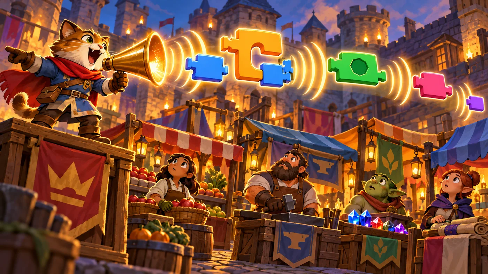
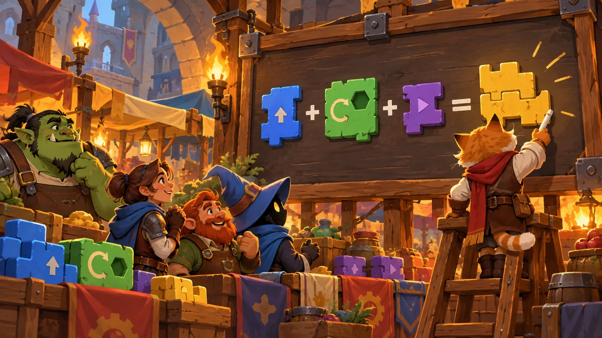

扣哒考级 · GESP 图形化 二级 · 第 6 单元 | 彩虹集市 RAINBOW BAZAAR
传声筒 广播与变量
Broadcast and Variables

安雅
红发队长 · 你的旅伴
集市中间立着一只发光的喇叭，旁边挂着一块大黑板。
摊主先举起喇叭喊了一声——好几个摊位同时亮起了灯； 然后他转身在黑板上的数字后面添了一笔——那是今天的销售额。
"一个负责喊，一个负责记。"他说，"让一群人一起做事，靠的就是这两样。"
摊主先举起喇叭喊了一声——好几个摊位同时亮起了灯； 然后他转身在黑板上的数字后面添了一笔——那是今天的销售额。
"一个负责喊，一个负责记。"他说，"让一群人一起做事，靠的就是这两样。"
安雅 · 红发队长
广播和变量，一个管"什么时候做什么"，一个管"现在是多少"。考试最爱考三句：消息名要一致、"并等待"会等、公共数据用"所有角色"。 把这三句记牢，这一单元的题就稳了。
0 单元导语与目标
Before We Start
0.1 学习目标
- 理解广播：一个角色喊一声，别的角色都能听到；
- 掌握三块广播积木：广播消息、广播并等待、当接收到消息；
- 分清"广播"与"事件"的差别；
- 会新建变量，会用设为、增加、显示 / 隐藏；
- 理解变量的两种作用域：适用于所有角色 / 仅适用于当前角色。
0.2 考纲对照
| 考纲知识块 | 考纲要求 | 本单元小节 |
|---|---|---|
| 5 广播 | 广播的概念、广播消息、广播并等待、角色 / 背景之间的交互 | 1.1～1.3、2.1～2.2 |
| 6 变量 | 变量的新建、删除、修改、初始化、显示 / 隐藏、变量的作用域 | 3.1～3.2、4.1～4.2 |
广播和变量是二级的两件"通信工具"：广播传的是"什么时候做什么"， 变量传的是"现在是多少"。
1 广播：一句话传到所有耳朵
Broadcasting
1.1 广播消息
集市上有个吆喝的猫，举着一只发光喇叭。它一喊，好几个摊位上的人同时抬头—— 这就是广播的力量。

assets/illustrations/scratch-L2-06-01_broadcast_megaphone.webp
【配图位】集市吆喝的猫举着发光喇叭喊话，声波传向几个摊位，摊位上的角色同时抬头。（提示词见《GESP配图清单与AI绘图提示词》第四节 2-6）
重点示例：喊一声，所有人行动
图形化积木
读法 上面那块负责"喊"，下面那块负责"听到之后做什么"——两块可以在不同的角色身上
打个比方：广播就像学校里的广播喇叭——一句话喊出去，所有听得见的人都行动，喊话的人不需要知道到底有哪些人在听。
1.2 当接收到消息
图 2（SVG）：广播的三块积木
1.3 广播和事件有什么不一样
图 3（SVG）：广播与事件的区别
一句话记住：广播是角色与角色之间说话的工具。背景要换、角色要动、多个角色要同时做一件事——都用广播来协调。
2 广播并等待
Broadcast and Wait
2.1 两者的区别
图 4（SVG）：普通广播与"并等待"
2.2 什么时候用"并等待"
重点示例：等大家准备好再开幕
图形化积木
要点 "广播准备"喊完马上继续；"广播开始并等待"会先等所有收到"开始"的角色做完，再执行下面那句"说市场开张"
打个比方：广播像发一条群消息——发完你就去干别的了；
广播并等待像开班会时老师点名——叫完所有人回答完，才继续下一步。想保证"事情按顺序发生"，就用"并等待"。
广播并等待像开班会时老师点名——叫完所有人回答完，才继续下一步。想保证"事情按顺序发生"，就用"并等待"。
3 变量：一个贴了标签的盒子
Variables
3.1 新建变量
集市上挂着一块大黑板，上面写着"今日销售额"。摊主说： "这个名字贴上去，数字就有人记着了。"

assets/illustrations/scratch-L2-06-02_variable_scoreboard.webp
【配图位】集市里一块巨大的木制记数黑板记录着总销售额，一只猫正用粉笔改写数字，其他摊主看着黑板。（提示词见《GESP配图清单与AI绘图提示词》第四节 2-6）
图 6（SVG）：新建变量的三步
3.2 设为、增加与显示
重点示例：变量最常用的四块积木
图形化积木
要点 "设为"是直接换成某个值（常用来初始化）；"增加"是在原来的基础上加一点
初始化为什么很重要？"将分数设为 0"这一步叫初始化。如果不做，上次玩完留下的旧分数会一直留在盒子里，新一局一开始就是个大数字。
4 变量的作用域
Variable Scope
4.1 适用于所有角色
图 7（SVG）：两种作用域
4.2 选错作用域会怎样
一个典型场景：游戏里要记"总分"，两个角色都会加分。
· 选适用于所有角色——两个角色加的是同一个分数，总分正常累加；
· 选仅适用于当前角色——两个角色各记各的，分数永远只显示其中一个的。
要共享的数据，一定要选"适用于所有角色"。
· 选适用于所有角色——两个角色加的是同一个分数，总分正常累加；
· 选仅适用于当前角色——两个角色各记各的，分数永远只显示其中一个的。
要共享的数据，一定要选"适用于所有角色"。
图 8（SVG）：变量的四个常用操作
5 代码实战
Level Practice
这一关的核心是"记住一个数"：走到第几步了、还剩多少路要走—— 这种"要记东西"的活儿，正是变量干的。
关卡 159
变量（Variables）
进入关卡 →
故事：
集市的长廊要走上好几段，每一段的长度都不一样。你没法一次算清总共要走多少，
只能一边走一边记：已经走了几步、还剩几段没走。
思路：先把"步数"这个变量建起来、设成 0；每走一步就"将步数增加 1"。 这样一来，"我走了多少"这件事就被记在盒子里了，随时能取出来看。
重点示例：边走边记
图形化积木
读法 开头初始化 → 每走一步加 1 → 走完后用判断检查"到 5 了吗"
自己试一试：把"将步数设为 0"这一块删掉再跑一遍——你会发现数字从上次的结果继续往上加。这就是"初始化"为什么重要。
注意最后那个"如果……那么"：' 变量一旦被记住，就能当作条件来用——
变量最常见的三个用途：① 计分（每做对一次加 1）；
② 计数（走了几步、剩几条命）；
③ 当条件（分数到 10 就通关）。
去扣哒世界闯这一关 →
② 计数（走了几步、剩几条命）；
③ 当条件（分数到 10 就通关）。
6 常见陷阱
Common Traps
陷阱 1：广播的名字两边写得不一样。喊的是"开始"，听的是"开始啦"——那谁也不会响应。
正确做法：收发双方的消息名必须一字不差。
正确做法：收发双方的消息名必须一字不差。
陷阱 2：把"广播"和"广播并等待"当成一回事。前者喊完就走，后者要等大家做完。
怎么选：需要"按顺序发生"就用"并等待"。
怎么选：需要"按顺序发生"就用"并等待"。
陷阱 3：忘了初始化变量。上一局的旧值会留下来，新一局一开始数字就不对。
正确做法：在"当绿旗被点击"的开头，先"将……设为 0"。
正确做法：在"当绿旗被点击"的开头，先"将……设为 0"。
陷阱 4：要共享的数据建成了"仅适用于当前角色"。别的角色找不到它，分数就会各算各的。
正确做法：公共数据一律选适用于所有角色。
正确做法：公共数据一律选适用于所有角色。
7 题目练习
Practice
前 2 题改编自 2026 年 9 月 · 图形化编程 二级 第 7 题、第 8 题，其余为原创练习题。
改编自 2026 年 9 月 · 图形化编程 二 级 · 第 7 题单选题
关于舞台背景能否发送和接收广播，下列说法正确的是（ ）。
A.舞台背景只能接收广播，不能发送广播
B.舞台背景只能发送广播，不能接收广播
C.舞台背景既能发送广播，也能接收广播，只不过要在"背景"的脚本区里编程
D.舞台背景既不能发送也不能接收广播，广播只限角色之间
B.舞台背景只能发送广播，不能接收广播
C.舞台背景既能发送广播，也能接收广播，只不过要在"背景"的脚本区里编程
D.舞台背景既不能发送也不能接收广播，广播只限角色之间
查看答案与详解
答案：C。背景在图形化编程里就是一个"大角色"——点一下背景区里的它，脚本区就会切换到它的脚本，那里同样能放"广播""当接收到"这些积木。
A、B 错：只限制了一半；
D 错：广播并不限于角色之间，角色和背景照样能互相通气，这正是二级考纲里说的"角色 / 背景之间的交互"。
对应小节1.1、1.3 广播与背景。
A、B 错：只限制了一半；
D 错：广播并不限于角色之间，角色和背景照样能互相通气，这正是二级考纲里说的"角色 / 背景之间的交互"。
对应小节1.1、1.3 广播与背景。
改编自 2026 年 9 月 · 图形化编程 二 级 · 第 8 题单选题
默认小猫角色，某个变量 x 的初始值是 0。脚本里执行"将 x 增加 1"，然后再执行"将 x 增加 1"，最后执行一次"将 x 设为 1"。
执行完这段脚本后，变量 x 的值是（ ）。
执行完这段脚本后，变量 x 的值是（ ）。
A.0
B.1
C.2
D.3
B.1
C.2
D.3
查看答案与详解
答案：B。一步一步算：
0 → 增加 1 → 1 → 增加 1 → 2 → 设为 1 → 1。
关键在最后一句："设为"是把盒子里的东西直接换掉，不看原来是多少；而"增加"是在原来基础上再加。
A、D 错：把两种操作混着算了；
C 错：漏了最后那句"设为 1"。
对应小节3.2 设为、增加与显示。
0 → 增加 1 → 1 → 增加 1 → 2 → 设为 1 → 1。
关键在最后一句："设为"是把盒子里的东西直接换掉，不看原来是多少；而"增加"是在原来基础上再加。
A、D 错：把两种操作混着算了；
C 错：漏了最后那句"设为 1"。
对应小节3.2 设为、增加与显示。
原创练习题单选题
集市的摊主要换背景，同时让三个角色的动作一起开始。下面哪种做法最合适（ ）。
A.在每个角色里都写一遍"当绿旗被点击"
B.用一块"广播"消息，让三个角色都用"当接收到"来响应
C.在每个角色的脚本里写上另外两个角色的名字
D.把三个角色合成一个角色
B.用一块"广播"消息，让三个角色都用"当接收到"来响应
C.在每个角色的脚本里写上另外两个角色的名字
D.把三个角色合成一个角色
查看答案与详解
答案：B。广播正是"一个角色喊、多个角色同时响应"的工具，这是它最典型的用法。
A 错：虽然也能同时开始，但没法协调"谁先谁后"，也没法让一个动作触发另一串动作；
C 错：脚本里没法直接"叫别的角色做事"；
D 错：三个角色各有各的造型和脚本，合并不现实。
对应小节1.1～1.3 广播。
A 错：虽然也能同时开始，但没法协调"谁先谁后"，也没法让一个动作触发另一串动作；
C 错：脚本里没法直接"叫别的角色做事"；
D 错：三个角色各有各的造型和脚本，合并不现实。
对应小节1.1～1.3 广播。
原创练习题单选题
"广播 消息1"和"广播 消息1 并等待"的区别是（ ）。
A.前者只有自己听得到，后者所有人都听得到
B.后者会等所有收到消息的脚本执行完，再继续往下
C.后者不会真的发出消息
D.两者完全一样
B.后者会等所有收到消息的脚本执行完，再继续往下
C.后者不会真的发出消息
D.两者完全一样
查看答案与详解
答案：B。差别就在"并等待"三个字——等大家做完再往下走。
A 错：两者都是发给所有角色听的；
C 错：它照样发消息，只是会等；
D 错：执行顺序不同，效果就不同。
对应小节2.1 两者的区别。
A 错：两者都是发给所有角色听的；
C 错：它照样发消息，只是会等；
D 错：执行顺序不同，效果就不同。
对应小节2.1 两者的区别。
原创练习题单选题
小摊主要记录"今天一共卖了几件商品"，每卖出一件就加 1。下面哪种做法最合适（ ）。
A.新建一个变量"件数"，先设为 0，每卖出一件就"将件数增加 1"
B.用"重复执行 10 次"数一数
C.让角色说一句话
D.换一个背景
B.用"重复执行 10 次"数一数
C.让角色说一句话
D.换一个背景
查看答案与详解
答案：A。"要记住一个会变化的数字"——这正是变量的本职。先初始化为 0，再用"增加 1"累加。
B 错：重复次数是固定的，数不出实际卖出多少；
C、D 错：说话和换背景都不会"记住"数字。
对应小节3.2 设为、增加与显示。
B 错：重复次数是固定的，数不出实际卖出多少；
C、D 错：说话和换背景都不会"记住"数字。
对应小节3.2 设为、增加与显示。
原创练习题多选题
关于变量的作用域，下面说法哪些是正确的（ ）。
A."适用于所有角色"的变量，所有角色都能读、能改
B."仅适用于当前角色"的变量，别的角色看不到
C.作用域在变量新建时就确定，之后不能改
D.记总分这种公共数据，应该选"适用于所有角色"
B."仅适用于当前角色"的变量，别的角色看不到
C.作用域在变量新建时就确定，之后不能改
D.记总分这种公共数据，应该选"适用于所有角色"
查看答案与详解
答案：A、B、D。这三条正是作用域的核心规则。
C 错：其实可以通过"重命名 / 删除后重建"来调整，但更重要的是——作用域确实是新建时就得选对，选错了常常要回头改脚本，所以别在这里马虎。
对应小节4.1、4.2 变量的作用域。
C 错：其实可以通过"重命名 / 删除后重建"来调整，但更重要的是——作用域确实是新建时就得选对，选错了常常要回头改脚本，所以别在这里马虎。
对应小节4.1、4.2 变量的作用域。
原创练习题判断题
在图形化编程中，如果角色的脚本里没有写"将分数设为 0"，那么分数会一直保留上一次运行结束时的值。（ ）
查看答案与详解
答案：正确（√）。变量就像一个盒子，里面的东西不会自己消失——程序停了，值还在。
所以新一局开始时，一定要先"将分数设为 0"（初始化），否则数字会从上次的结果接着往上加。
对应小节3.2 设为、增加与显示。
所以新一局开始时，一定要先"将分数设为 0"（初始化），否则数字会从上次的结果接着往上加。
对应小节3.2 设为、增加与显示。
8 本单元小结
Unit Summary

贺舒曼 · 镜中先知
这一单元学的是"通信"：广播让角色互相通知，变量让数字被记住。记住三件事：消息名两边要一致、"并等待"会等、 公共数据要用"适用于所有角色"。二级卷子上的广播和变量题，基本都围着这三条出。
你在传声筒边学到了什么
- 广播三块：广播消息、广播并等待、当接收到消息；
- 广播 vs 事件：事件是"外面叫我"，广播是"同伴叫我"；
- 并等待：喊完先等大家做完，再继续往下；
- 变量四操作：新建、设为、增加、显示 / 隐藏（外加删除）；
- 作用域：要共享的数据必须选"适用于所有角色"；初始化别忘。
下一站：算盘小铺
最后一块拼图是"算"：加减乘除、比较大小、与或非。 下一单元我们把集市算盘铺开，把这些运算积木一块块算清楚。